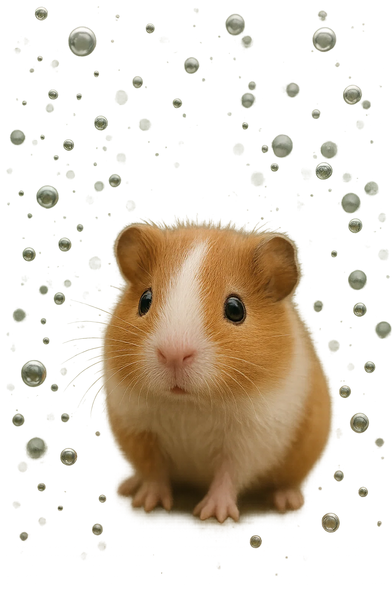

ზღვის გოჭები არიან პატარა ზღვის ცხოველები, რომლებიც გამოირჩევიან ფერადი სხეულით. ისინი ხშირად ცოცხლობენ რიფებზე და ნისლიან წყალზე. მათი სხეული მდიდარია ფერებით – ლურჯი, მწვანე, ვარდისფერი, ყვითელი. ზღვის გოჭები ნელ-ნელა მოძრაობენ წყალში და ძალიან მეგობრულები არიან. ისინი ხშირად საკვებს შოულობენ ქვების და ნაპირზე მცხოვრები პატარა ორგანიზმებისგან.
ზღვის გოჭები ძალიან საინტერესო არსებებია, ისინი არიან გარემოს ფერადი და მხიარული.
